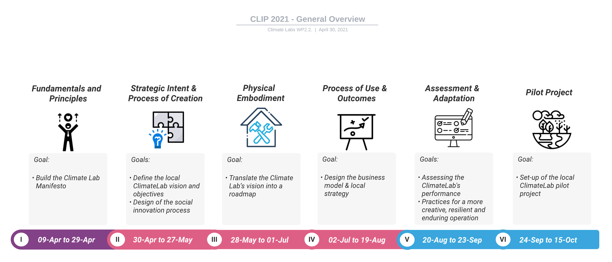

Introduction to CLIP - USACH
An overview of the program
1 Program Description
1.1 Methodology
The incubation program is structured in six sprints in which participants are introduced to a set of conceptual material together with specific strategic workshops. The CLIP has a duration of six months starting from XXX/2023 - XXX / 2024.
Each sprint has specific goals that the CLT should fulfill in order to successfully complete the program. The results of each sprint are to be uploaded to the website assigned to each team. The website will serve as a prototype for the strategic design of the Innovation Labs that the CLT can ultimately use to validate their proposals with other stakeholders, and as a dissemination tool for their local Climate Lab initiative.
The incubation program is conceived as a collective pool of knowledge and therefore brings together various methods, practices and tools shared by consortium members and invited experts. All the different experiences are articulated under the innovation lab framework that has been developed by the ERPI of Université de Lorraine as part of its research strand in fostering collaborative innovation processes (Osorio et al. 2019).
Building on the context analysis and capability mapping, this incubation program proposes to the CLT to proactively and collectively strategize in terms of the main innovation lab components as shown in the figure below.

1.2 Key Action Moments
There are five key action moments throughout the CLIP:
Sprint opening (1h30 per sprint)
- Synchronous webinar via Zoom in which sprint goals and main activities are presented to CLT
Online material (Between 1h and 1h30 of video content per sprint)
CLT can access the online material via the CLIP website. Content is composed by conceptual videos, case experiences and complimentary readings
Members of CLT should access this content prior conducting each workshop
Team workshops (Between 1h30 and 2h per workshop)
Each sprint proposes to the CLT a strategic workshop that should be conducted as a team
Workshops templates are provided via the Mural platform
Tutorships (1h30 per sprint)
Intermediary check-ins via Zoom are proposed to the CLT in the forms of Q&A sessions
This is the moment for CLT to exchange with their mentors and guest experts to share their experiences or ask questions regarding the ongoing sprint’s goal.
Upload and share sprint results
By the end of each sprint, the CLT should upload their workshop results to their Climate Lab website prototype
At the beginning of the next sprint, the CLT will briefly present to the consortium their results and learnings
Participants from each CLT are expected to dedicate 2 hours minimum per week to the CLIP.
Successful completion of the program
To successfully complete the incubation program, the CLT need to:
- Conduct as a team each one of the workshops that will be assigned in each sprint.
- Upload the workshop results to a non-published website that will constitute the prototype for the strategic design of their ClimateLab.
- Share progress at the beginning of each sprint.
- Final presentation of the strategic design of the Climate Lab at the mid-project meeting.
Operation and online platforms
- All the incubation program content will be available through the CLIP Website: <https://lf2l.fr/CLIP/>
- Webinars and video calls will be held through Zoom.
- Workshop templates will be available via MURAL.
- Website prototype templates will be provided via Google Sites.
Program Schedule
| Sprint | Object | Goal(s) | Main Focus |
|---|---|---|---|
| I | Fundamentals & Principles 3 weeks From 09/04/21 to 29/04/21 |
- Build the Climate Lab Manifesto | - Set the stage in terms of Climate Change, Social Innovation and Innovation Lab
- Teams focus on defining the CLT purpose |
| II | Strategic Intent & Process of Creation 4 weeks From 30/04/21 to 27/05/21 |
- Define the Climate Lab’s vision and objectives
- Design of the social innovation process |
- The importance of building a collective strategic intent
- Innovation labs facilitate innovation processes: what is the social innovation process for your Climate Lab? |
| III | Physical Embodiment 4 weeks From 28/05/21 to 01/07/21 |
- Translate the Climate Lab’s vision into a technological resource roadmap | - Management of technological resources
- Spaces to support social innovation |
| IV | Process of Use & Outcomes
From 02/07/21 to 02/09/21 |
- To round out your Climate Lab’s strategic design and present your intent to all members of the Consortium |
- The role of innovation labs in universities and climate change |
| V | Assessment & Adaptation
From 03/09/21 to 23/09/21 |
- Assess the Climate Lab performance | - Practices for a more creative, resilient and enduring operation |
| VI | Pilot Project 3 weeks From 24/09/21 to 15/10/21 |
- Set-up of the local Climate Lab pilot project | - Moving from strategic to operational level: applying the living lab approach |
CLIP Team
Tutorship Schedule
All tutorship sessions will be held in parallel rooms via Zoom at 16h00 CET - 9:00am COL/MEX - 11:00am BRA
Session 1 - 23/04/2021
Session 2 - 14/05/2021
Session 3 - 11/06/2021
Session 4 -
09/07/2127/08/2021 - Let’s test your pitch!Session 5 - 10/09/2021 - Present your pitch to the Climate Lab External Committee!
Session 6 - 08/10/2021
Prototyping your Climate Lab
Colombia
In this link will be able to prototype your website :